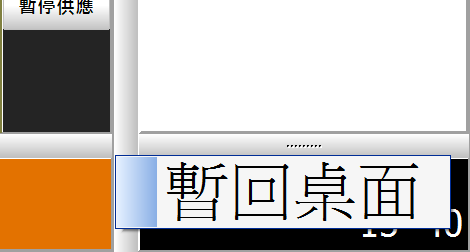

請問如何不關閉先用，回到桌面?熱感應印表機哪裡買?跟一般印表機一樣的安裝方式嗎?
1 個回答
如果您只是要暫時離開系統用電腦做其他的事(如修改菜單),
可按右下角的時間->暫回桌面

2.可以到掏寶'網 或露天拍賣 購買
可找 芯燁 XP 230 或 XP 260 先用有不少用戶都用此款
http://ico.tw/QA/index.php?qa=306
基本上安裝和一般印表機差別不大 內附光碟 裡面有PDF的安裝說明
按照步驟做 應該可以順利安裝成功
有問題可留言給站長 站長會盡力解答